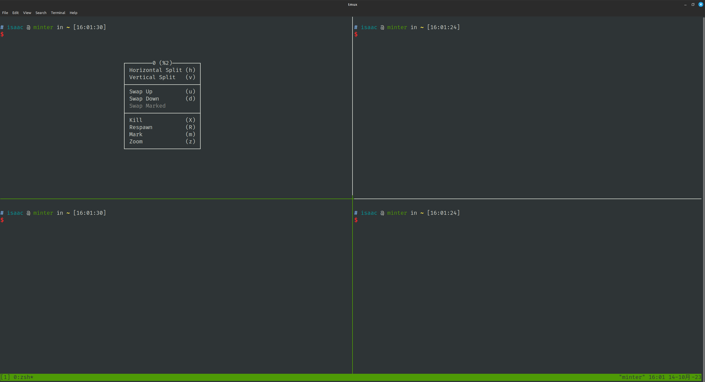

Linux 下刚刚好的终端模拟器 - Tilix
前言
使用 Linux 很久，用过多个发行版本，每个版本都有内置的终端模拟器。有 Gnome Terminal、Konsole、GUAKE 等等。使用 MacOS 时遇到了让我觉得刚刚好的终端模拟器 - Iterm2，各种原因下，我不再使用 MacOS，后来就很少让我觉得趁手的终端模拟器。后来，一直使用 Windows 和 Linux。Windows 下用的是 Windows Terminal（这是应用名），配合 WSL2，够用也漂亮，知道在开发中遇到 WSL2 无法解决的情况，再次投身到 Linux 的海洋中。目前使用 Linux Mint 21，它是个漂亮且好用的发行版本。Linux 下的终端始终是我内心深处的刺呢，一直在尝试着其他终端：Konsole、Kitty、tmux、Tabby、Terminator、Tilda等等，花了不少的时间安装、配置，遇到不少的问题，都没有达到心目中期望的样子。直到遇到了 Tilix。
摘要
todo
提 tmux、kconsole 和 kitty，他们都是不错的。为什么最后没有继续用。
我期待的终端是怎么样的？
tilix 的安装、配置
背景
1 | System: |
Tmux
简述
Tmux 是一个终端复用器，可以在一个终端窗口中同时运行多个终端会话。它允许用户在一个终端中创建、管理和切换多个虚拟终端，从而提高工作效率。
使用 tmux，你可以在一个终端窗口中创建多个窗格和标签页，每个窗格和标签页都可以运行独立的终端会话。这意味着你可以同时查看和操作多个终端，而无需打开多个终端窗口。
tmux 提供了一系列命令和快捷键，用于管理和控制终端会话。你可以轻松地创建、关闭、切换和重命名窗格和标签页，调整它们的大小和布局，以适应你的工作需求。你还可以在不同的窗格和标签页之间进行复制粘贴操作，共享剪贴板内容。
另外，tmux 还支持会话的分离和附加功能。这意味着你可以在一个tmux会话中运行命令，然后将会话分离，保持命令在后台运行。稍后，你可以重新附加到该会话，恢复之前的终端会话状态。
tmux 是一个强大的工具，特别适用于需要同时处理多个终端会话的情况，如远程服务器管理、开发调试等。它提供了灵活的配置选项，允许用户自定义外观、键绑定和其他行为。
它功能丰富、灵活且强大的终端复用器，为用户提供了更高效地管理和控制终端会话的能力。它是命令行界面的一个有用工具，广泛应用于Unix-like系统中。
为什么选择了 Tmux
实话说，我会使用 Tmux 是看中了他分屏的功能。在经历多多个终端模拟器的试用无果后，我也倦怠于此。我打算着使用 Mint 自带的 Gnome Terminal（不支持分屏） 配合 Tmux 使用。
距离上次使用 Tmux 已经是 4、5 年前，现在 Tmux 已经变得更加优秀，更好的鼠标指针支持，让我惊艳的是它已经支持右键菜单，分屏、关闭、切换都已经很轻松，一句话的配置就已经解决了大部分的问题。
1 | ~/.tmux.conf |

放弃的原因
最大的问题来源于剪切板。Tmux 自有一套剪切板，并且它与系统剪切板并不是双向共享的。这让我难受，可以想像：你执行某个命令是出现了异常，提供了异常信息。你发现你解决不了，因此你打算复制异常信息到浏览器或其他地方以寻找答案。此时你发现此路不通！你只好手打了异常信息关键字进行搜索。天可怜见，你找到了答案。你复制答案的解决命令尝试解决，突然你发现你复制的内容在终端内变了样！此时此刻，你只想数数天上的草泥马。
因此，我花了不少的时间尝试去解决这个问题。安装 xclip，编辑配置文件尝试让 tmux 剪切板自动写入系统的剪切板。但是都不尽如人意，最终，我选择后退一步，编写了 2 个 shell 命令，以在有需要时手动写入对应的剪切板：
读取 tmux 的剪切板内容，写入 xclip，sysclip-read-tmux
1 | !/bin/bash |
在 tmux 中复制内容后，执行 sysclip-read-tmux。
读取系统剪切板，写入 tmux，sysclip-write-tmux
1 | echo "$(xclip -o -selection clipboard)" | tmux load-buffer - |
在非 tmux 中复制内容后，在 tmux 下执行 sysclip-write-tmux。
以上这个解决方案是我最后可以使用的解决方案，是我最后的倔强。
除了剪切板问题外，有几个审美上的问题，我可以接受，但是希望更好的是：
窗口分割线，分割窗口后的分割线不符合我的审美，并且未找到方案修改。我也不愿意继续花更多时间寻找它的解决方案；
右键菜单，虽然支持右键菜单，功能更好了，但是难看是不争的事实；
底部状态栏，同上。
Konsole
简述
Konsole 是一个流行的终端模拟器，用于在 Linux 和其他 UNIX-like 操作系统上提供命令行界面。它是 KDE 桌面环境的一部分，并且是 Konqueror 项目的一部分。
Konsole 提供了一个功能丰富的用户界面，使用户可以通过命令行与计算机系统进行交互。它支持多标签页，允许用户同时打开多个终端会话，并在它们之间轻松切换。每个标签页可以独立设置，包括配色方案、字体、背景图像等。
Konsole 还具有许多其他功能，如自动完成、命令历史记录、拖放文本等。它支持多种终端模拟协议，包括本地终端、远程 SSH、Telnet 和串口连接，使用户能够通过网络或串口访问和管理其他计算机或设备。
除了基本的终端功能外，Konsole 还支持一些高级特性，如分屏显示和垂直拆分，使用户可以在同一个终端窗口中同时查看和操作多个终端会话。
为什么选择了 Konsole
最开始接触 Konsole 是安装 Manjora（KDE） 时，也是我第一次安装 KDE 桌面环境。Konsole 是它自带的终端模拟器。它自带的分屏的功能实在是让我经验，让我
Kitty
Kitty 是一个现代化的终端模拟器，设计用于提供强大的命令行界面和丰富的功能。它是一个跨平台的终端模拟器，可在Linux、macOS和Windows等操作系统上使用。
Kitty的目标是提供高性能和可定制性。它采用GPU加速技术，可以处理大量字符和图形渲染，从而实现流畅的终端体验。此外，Kitty还支持像素级的渲染，使用户可以在终端中显示高分辨率的图像和图标。
Kitty具有许多先进的功能，包括多标签页和分屏显示，使用户可以同时管理多个终端会话。它支持自动完成、命令历史记录、滚动回放等常见的终端功能。Kitty还支持基于鼠标的交互，用户可以使用鼠标选择文本、复制粘贴内容等。
除此之外，Kitty还提供了丰富的自定义选项，用户可以自定义配色方案、字体、键盘快捷键等，以满足个人偏好和需求。它还支持脚本扩展和插件，允许用户根据自己的需求添加额外的功能和扩展。